AI Solution
AI 솔루션
24시간 멈추지 않는 AI 영상 분석,
감지에서 대응까지
AI가 상시 분석하여 침입, 쓰러짐, 안전모 미착용 등 위험 상황을 자동으로 찾아내고,
이벤트가 발생하면 관제 화면과 모바일로 즉시 알립니다.
관제 인력의 부담을 줄이면서 위험 상황 인지부터 대응까지 걸리는 시간을 단축합니다.
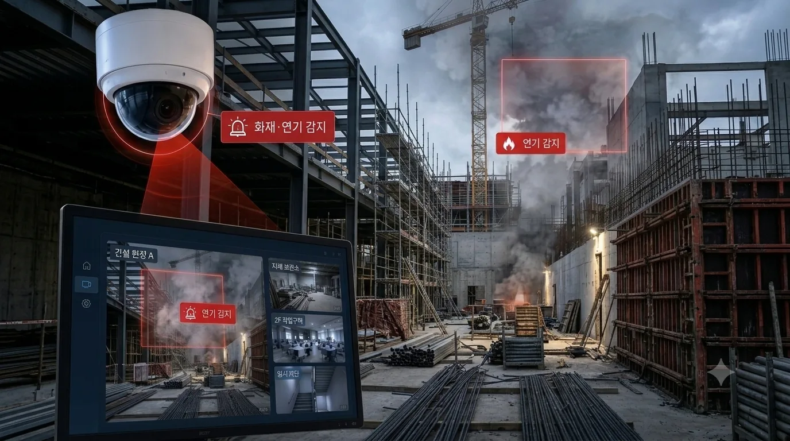
도입 효과
- 01
사람이 놓치기 쉬운 위험 상황을 24시간 자동 감지
- 02
관제 인력은 이벤트 발생 시에만 집중해 업무 효율 향상
- 03
안전모 미착용, 안전고리 미체결 등 안전수칙 위반을 자동 확인 · 기록
- 04
야간과 휴일 등 관리 공백 시간대의 침입과 화재 감시 강화
작업 현장의 모든 위험, AI가 지켜보고 있습니다.
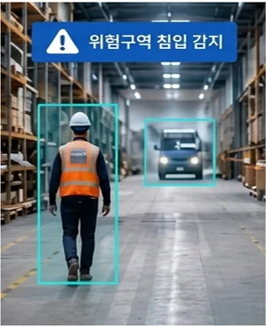
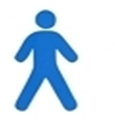
위험구역 침입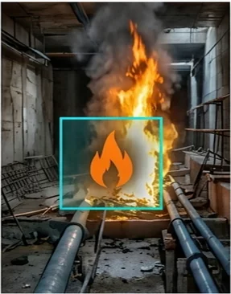
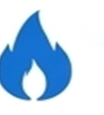
불꽃 · 연기 감지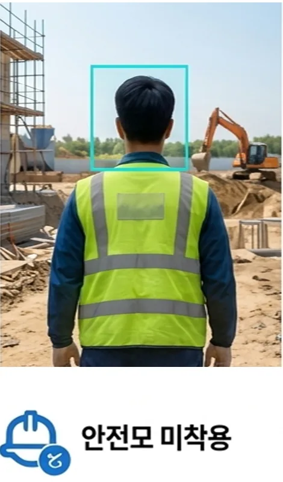
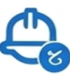
안전모 미착용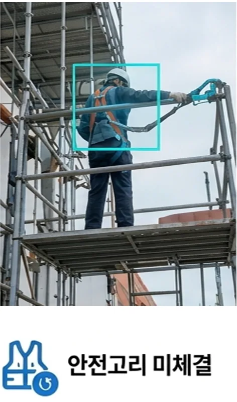
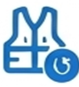
안전고리 미체결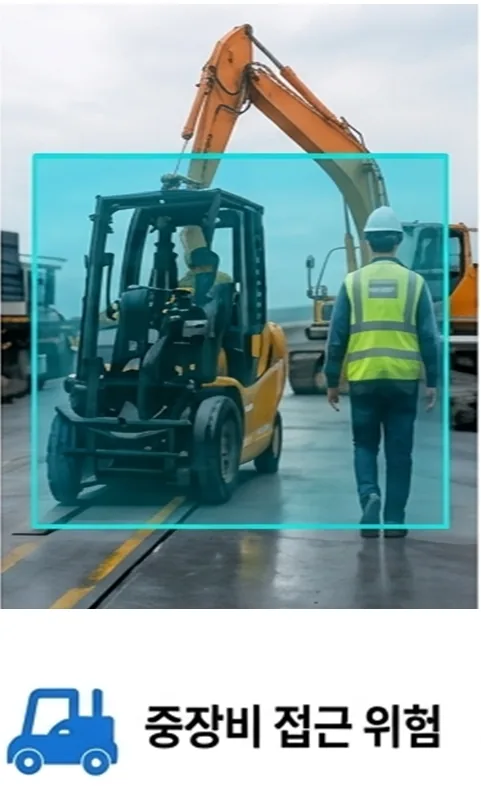
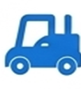
중장비 접근 위험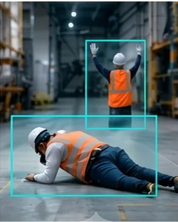
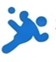
작업자 쓰러짐 · SOS
AI EVENT DETECTION
AI 이벤트 감지 항목
다양한 이벤트를 실시간으로 감지하고, 안전한 현장을 만들어갑니다.
- 사람 · 차량군집배회쓰러짐침입(사람)침입(사람+차량)침입(차량)불법주정차
- 화재 · 재난불꽃연기침수침입(청소지역)
- 안전수칙안전모 미착용안전고리 미체결중장비 접근
- 기타SOS쓰레기 무단투기여성안심(화장실)
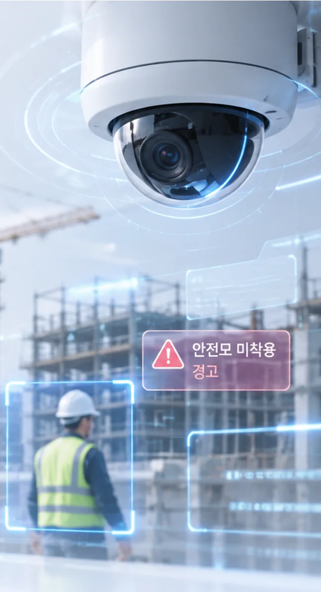
- STEP 01
이벤트 감지 · 분석
AI가 CCTV 영상에서
위험 상황을 찾아냅니다. - STEP 02
이벤트 발생 알림
감지 즉시 관제 화면과
모바일로 알림을 보냅니다. - STEP 03
실시간 안전 플랫폼
이벤트 영상을 확인하고 현장 대응을 지시합니다.